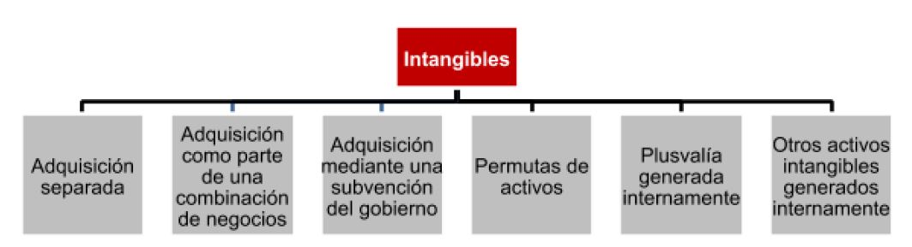

Se puede obtener un activo intangible a través de las siguientes formas:
1. Adquisicion separada
2. Adquisicion como parte de una combinacion de negocios
3. Adquisicion mediante una subvencion del gobierno
4. Permutas de activos
5. Plusvala generada internamente
6. Otros activos intangibles generados internamente
